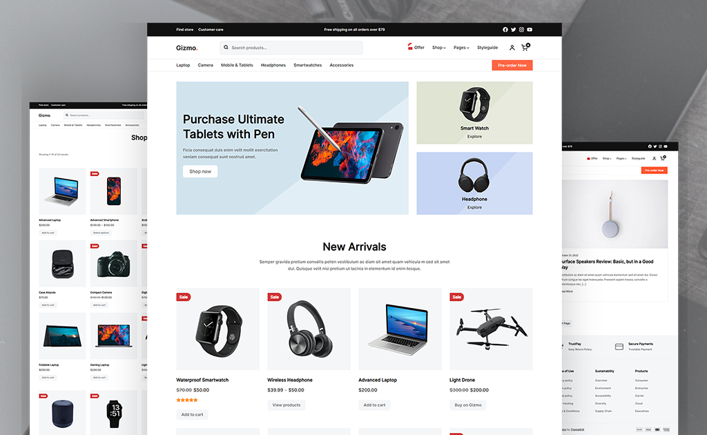
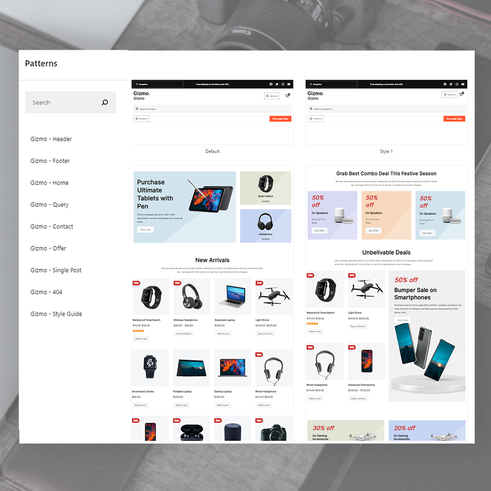
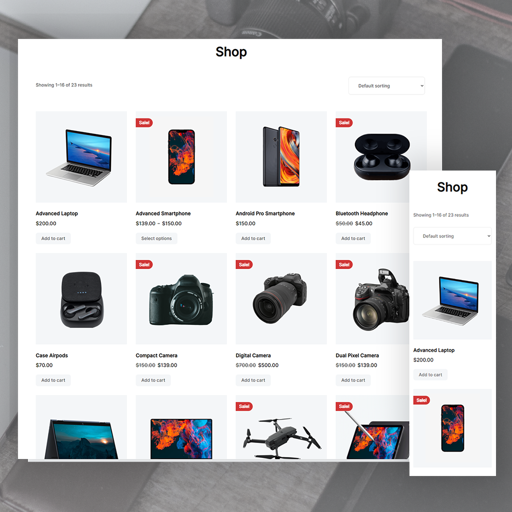
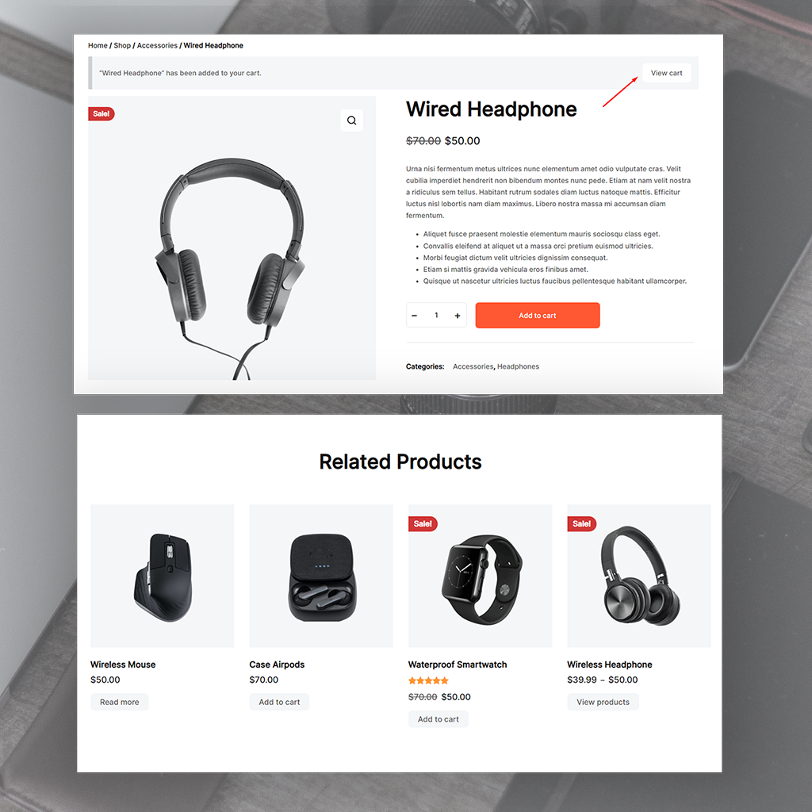
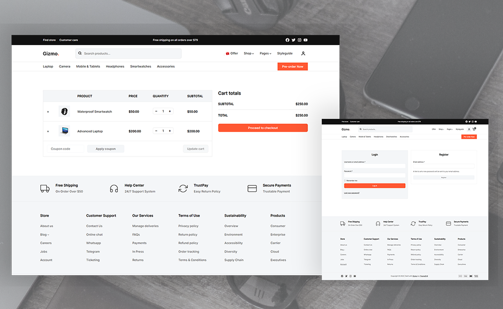
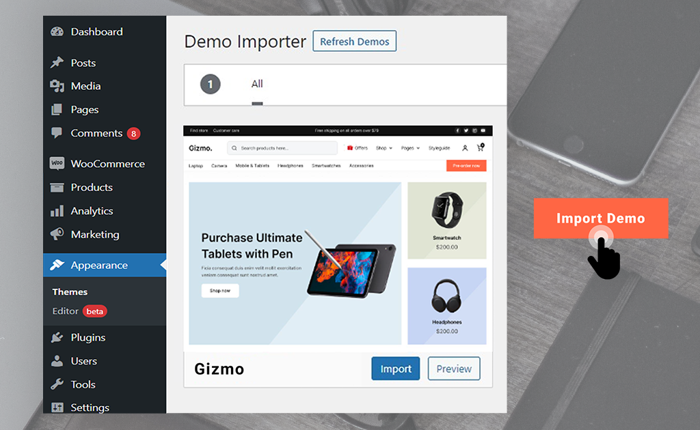
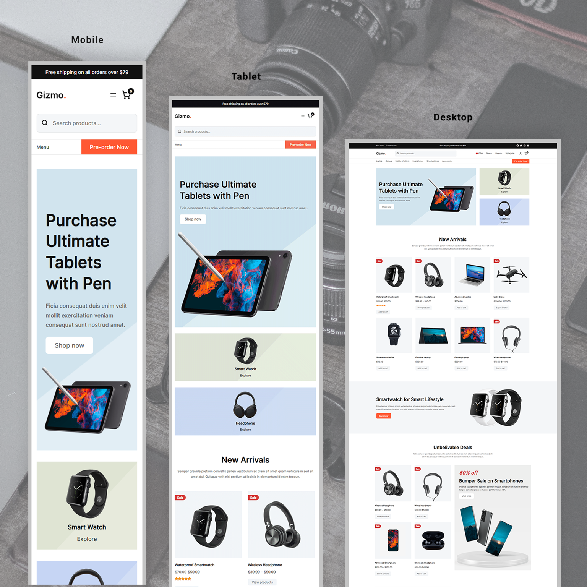
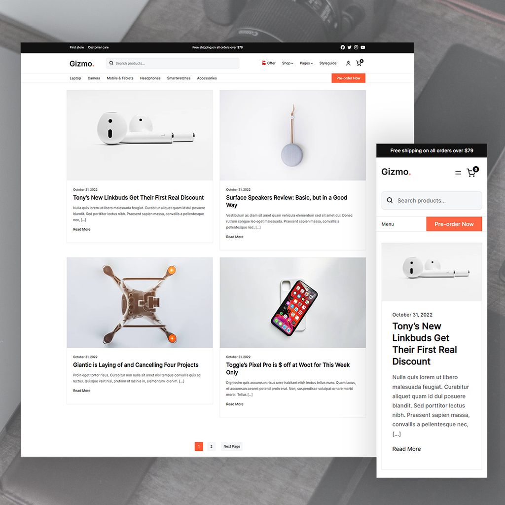
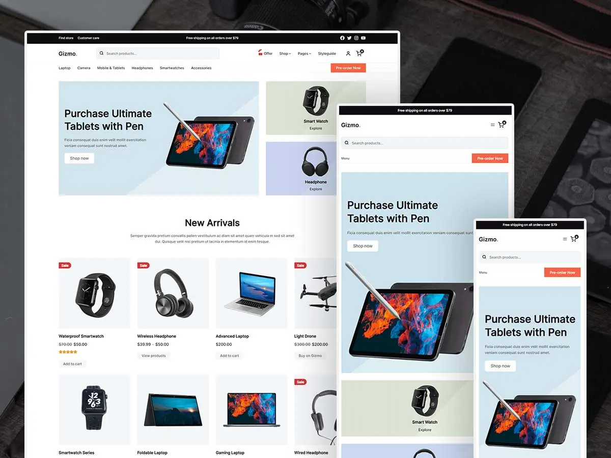

Gizmo WooCommerce theme
Building a full-featured technology store using WordPress Full Site Editing, Gutenberg blocks, and WooCommerce.

Overview
Gizmo is a WordPress block theme built for technology and electronics eCommerce. I used it to create a fully functional online store powered by WooCommerce, leveraging WordPress Full Site Editing (FSE) to design every part of the site directly in the Gutenberg editor without relying on the customizer or third-party plugins.
The store sells electronics, gadgets, and accessories with a complete shopping experience: product browsing, category navigation, cart management, checkout, user accounts, and a blog for product-related content.
Full Site Editing with Gutenberg
Full Site Editing is at the core of the WordPress philosophy. FSE allows universal changes across the entire website at once. Gizmo embraces this by exposing the header, footer, and all content areas as editable Gutenberg blocks. Building the store was a matter of dragging and dropping blocks, with every change reflected live in the editor.
The theme ships with a library of pre-built patterns (Header, Footer, Home, Query, Contact, Offer, Single Post, 404, Style Guide) and multiple layout variations for each, making it fast to assemble pages with consistent design language.

Header and Footer Builder
The header and footer are fully customizable in the Gutenberg editor. The header supports a primary navigation bar and a top bar that can include the site logo, title, tagline, search input, navigation menus, account icon, mini cart, buttons, and social icons. The footer can be divided into any number of columns with menus, payment method icons, social icons, copyright text, and icon boxes.
This flexibility made it possible to create a professional storefront header with category navigation (Laptop, Camera, Mobile & Tablets, Headphones, Smartwatches, Accessories) and a pre-order CTA button, along with a comprehensive footer with store info, customer support links, services, terms of use, sustainability, and product categories.
Product Catalog and Shop
The shop page displays a product grid with sorting options and pagination. Each product card shows the product image, name, price (with sale prices struck through), star ratings where applicable, and an add-to-cart button. Sale badges appear on discounted items. The catalog supports product categories, variable products with multiple options, and related product recommendations on detail pages.


Sales Conversion Features
Gizmo includes features designed to improve conversion rates and overall revenue. Related and up-selling products are displayed on product detail pages to encourage additional purchases. A mini cart in the header lets customers review their cart and proceed to checkout from any page. Sale badges and strike-through pricing create urgency on discounted products.

Demo Importer
The theme includes a one-click demo importer accessible from the WordPress admin panel under Appearance. This imports the complete demo content, layouts, and settings, giving a production-ready starting point that can be customized without building from scratch.

Responsive Design
The store is fully responsive across mobile, tablet, and desktop breakpoints. On mobile, the navigation collapses into a hamburger menu with a search bar and pre-order button. The product grid adjusts from four columns on desktop to two on tablet and a single column on mobile. Hero banners, category cards, and all content blocks reflow cleanly at each breakpoint.

Blog
The store includes a blog section for product reviews and technology news. Blog posts are displayed in a two-column grid with featured images, dates, excerpts, and pagination. The blog layout is also responsive, switching to a single-column card layout on mobile with the same visual hierarchy.


Outcome
The project resulted in a fully functional technology eCommerce store built entirely with WordPress block editing and WooCommerce. By working within the FSE framework, the store can be maintained and updated without developer intervention. The Gutenberg pattern library and demo importer streamlined the initial setup, while WooCommerce handles product management, cart, checkout, and order processing out of the box.